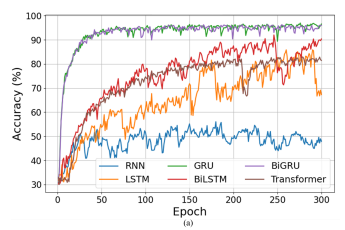
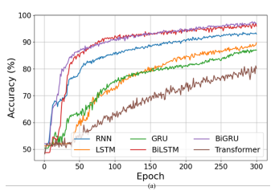

01 · OVERVIEW
프로젝트 개요
기존 비밀번호 기반 인증은 탈취·공유에 취약합니다. 본 연구는 스마트폰 IMU 센서 (가속도계·자이로스코프)를 활용해 키보드를 타이핑하는 동안 발생하는 미세한 진동 패턴—키스트로크 다이나믹스—을 학습하여 사용자를 자동으로 식별하는 행동 생체인식(Behavioral Biometrics) 시스템을 구현합니다.
직접 개발한 Android 데이터 수집 앱으로 좌손·우손·양손 3개 세션의 IMU 데이터를 구축한 뒤, 두 BiGRU 모델을 직렬 연결하는 멀티모달 캐스케이드 파이프라인으로 (1) 타이핑 손 방향 3-class 분류 → (2) 본인 여부 이진 인증을 수행합니다. 본 연구는 IEEE Sensors Journal에 투고 중입니다.
02 · SCREENS
주요 화면 및 결과


03 · ARCHITECTURE
시스템 구조 및 데이터 흐름
Android 앱에서 수집한 IMU 로그가 전처리·피처 추출을 거쳐 두 BiGRU 모델을 순차적으로 통과하는 계층형 멀티모달 파이프라인입니다. Model 1의 손 방향 분류 결과가 Model 2의 입력 피처에 직접 결합됩니다.
(Android 앱)
(원시 데이터)
(L/R/Both)
(BiGRU · 3-class)
출력 (L/R/B)
(백분위 통계)
(BiGRU · Binary)
(본인 / 타인)
04 · FEATURES
주요 구현 내용
05 · TROUBLE SHOOTING
문제 해결 과정
문제: 가변 길이 키스트로크 시계열의 배치 학습 불가
사용자마다 타이핑 속도가 달라 동일 키에 대한 IMU 시퀀스 길이가 제각각이었습니다. PyTorch DataLoader는 동일한 배치 크기를 요구하기 때문에 단순 제로 패딩만으로는 의미 없는 0값이 학습 신호에 혼입되는 문제가 있었습니다. 전체를 단순 패딩하는 대신, 7개 키 구간(chapter에 해당하는 ASCII 그룹)별로 목표 길이를 비례 배분한 뒤 numpy.interp로 열(column)마다 독립적으로 선형 보간하여 원래 타이핑 리듬을 최대한 보존했습니다. 이 방식으로 배치 학습 가능한 고정 크기 텐서를 생성하면서 정보 손실을 최소화했습니다.
문제: 타이핑 손 방향 정보를 인증 모델에 반영하는 방법
사용자 인증 모델(Model 2)이 타이핑 손 방향을 모르면 손에 따라 달라지는 IMU 패턴 차이를 구분하지 못해 인증 정확도가 낮아졌습니다. 두 모델을 완전히 분리하면 이 맥락 정보가 유실됩니다. Model 1의 추론 결과(L/R/Both 레이블)를 각 키스트로크 데이터 행에 열로 직접 concat한 뒤 백분위수 통계 피처를 추출하여 Model 2의 입력 피처(15-dim)에 포함시켰습니다. 이렇게 하면 Model 2가 손 방향 컨텍스트를 피처로 함께 학습할 수 있어 동일 사용자라도 손에 따른 IMU 패턴 변화를 보정할 수 있습니다.
06 · RETROSPECTIVE
프로젝트 회고
Android 앱 개발부터 데이터 수집·전처리·모델 학습·논문 작성까지 전 파이프라인을 직접 설계하고 구현했습니다. 특히 캐스케이드 구조를 통해 두 모델이 상호 보완하도록 설계한 것이 실질적인 인증 성능 향상으로 이어졌습니다.
데이터셋 규모가 제한적이어서 일반화 성능 검증이 충분하지 않습니다. 더 많은 피실험자를 통한 추가 검증이 필요합니다.
IMU 시계열 특성상 길이 정규화 전략이 모델 성능에 결정적 영향을 미친다는 점, 그리고 도메인 지식(손 방향)을 피처로 명시적으로 인코딩하면 모델이 더 효율적으로 학습한다는 것을 직접 확인했습니다.
논문에서는 Transformer를 포함한 다양한 모델과의 성능 비교 실험, 슬라이딩 윈도우 기반 실시간 인증 처리, 온디바이스 추론 모듈의 스마트폰 앱 통합을 향후 연구 방향으로 제시하고 있습니다.